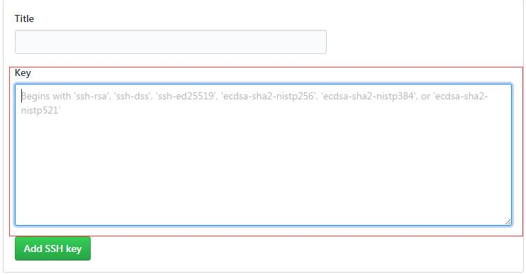

Hexo的配置（windows）
无意中看到了一篇关于在GitHub上部署自己的静态博客的文章，阅读完毕后很想尝试一下。
于是开始了长达一天半的征程.
如今成功部署，所以来分享一下这其中自己踩过的坑和解决办法。
准备
首先我们要有node环境、npm包管理、Git、Github
安装nodejs
鉴于npm是海外的，大陆访问略有艰辛，所以一开始我就切换了淘宝NPM镜像，当然大家可以选择使用VPN，这里就不做过多介绍了
Git安装
可以参考这个教程
http://www.runoob.com/git/git-install-setup.html
废话一些
要准备的东西有点多···我发现写起来好困难
那就一点一点来吧，安装的过程中参考了很多前人的经验。不过因为一个人出现的问题总归只有那么几个，所以我在配置的过程中也出现了一些，现有教程中找了半天也没有解决方案的问题。最后在搜索引擎的帮助下，还是找到了相关的内容，最后得以解决。
配置环境
创建Repository
首先需要在GitHub上创建一个Repository
需要和自己的用户名对应
|
|
我创建的仓库名
配置 Github的 SSH Key
git安装成功后找到git bash启动图标

1.设置Git的user name和email：
|
|
email建议为注册github时的邮箱
2.检查本机是否有设置SSH Key
|
|
成功进入ssh目录后，检查目录下文件
如下图所示，如果有对应的SSH Key请跳过以下步骤
【3.生成新的SSH Key】

3.生成新的SSH Key
git bash内输入命令
|
|

保证在 ~ 目录下继续输入命令
|
|
建议输入准确有效的邮箱
接下来三次回车enter即可，密码设置也可为空
成功执行以上步骤后会生成两个文件
id_rsa 和 id_rsa.pub
把id_rsa.pub文件里的内容复制到GitHub里
id_rsa.pub的地址：C:\Users\wsl-3460\.ssh
公钥文件地址根据git安装时路径决定，一般安装时没有更改就在系统用户目录下找即可
登录GitHub找到 New SSH key

将id_rsa.pub文件内容复制到图中的位置，保存即可

git bash内测试
|
|
最后看到这句话，就成功了